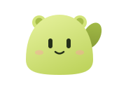

A model you choose.
Go with Anthropic, OpenAI, or OpenRouter. Run a local model through Ollama. Or connect an OpenAI-compatible endpoint.
- Anthropic
- OpenAI
- OpenRouter
- Ollama
- OpenAI-compatible
A little different. In development.
A self-hosted home for your AI conversations.
Choose the model. Make the teammate
yours.
Small presence. Big ideas.
Give a teammate a name, a personality, and a model. Then pick up the conversation in a calm space made for your next thought.
A model connection for every kind of thinking.
A local model, on your own machine.
Bring an API key for a supported provider.
Connect Anthropic, OpenAI, OpenRouter, Ollama, or an OpenAI-compatible endpoint. Then choose a model for each teammate.
Illustrative settings. No accounts or keys are connected here.
A glimpse of the interface, with an example conversation. Mawl is actively being built.
AI should fit the way you think.
And leave the choices with you.
Go with Anthropic, OpenAI, or OpenRouter. Run a local model through Ollama. Or connect an OpenAI-compatible endpoint.
A name, a personality, a model. Make a focused writing partner, a patient sounding board, or someone to think through the next idea with.
Mawl's server, database, and provider keys live on your machine. Conversations go to the model provider you choose. With a local Ollama model, the model can run locally too.
A work in progress, out in the open.
Mawl is early. Multi-provider chat and teammate personalities are here. A Windows desktop host is in development, with more on the roadmap.
For now, you can run the app with Docker Compose. Follow the code, see what's next, or help shape what Mawl becomes.
See the roadmapYes, if you're comfortable self-hosting an early project. The repository includes Docker Compose setup instructions. The Windows desktop experience is still in development; there isn't a ready desktop installer here yet.
Read the setup guideYou can use an API key for a supported provider, or a local model through Ollama. Mawl also includes ChatGPT sign-in and a Claude plan connection. Provider access, subscriptions, and usage charges depend on the connection you choose.
Mawl stores its data on the machine where you host it. When you use a cloud model, prompts are sent to that provider under its terms. If you choose a local Ollama model, model inference can stay on your machine too.

Your models. Your machine. Your next idea.
Meet the project on GitHub In development. Built in the open.